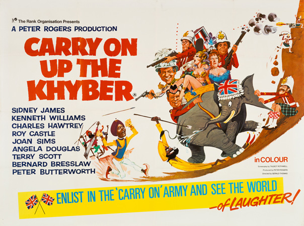
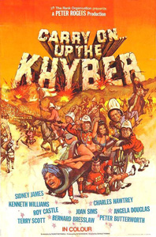
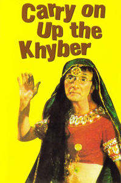

Peter Rogers
Talbot Rothwell
Sue Vaughan
Sir Sidney Ruff-Diamond (Sid James) is Queen Victoria's Governor in the British India province of Khalabar near the Khyber Pass. The province is defended by the feared 3rd Foot and Mouth Regiment (The Devils in Skirts), who are said to not wear anything under their kilts. When Private Widdle (Charles Hawtrey) is found wearing underpants after an encounter with the warlord Bungdit Din (Bernard Bresslaw), chief of the warlike Burpa tribe, the Khasi of Khalabar (Kenneth Williams) plans to use this information to incite an anti-British rebellion. He aims to dispel the "tough" image of the Devils in Skirts by revealing that contrary to popular belief, they do indeed wear underpants under their kilts.
A diplomatic operation ensues on the part of the British, who fail spectacularly to prove that the incident was an aberration. The Governor's wife (Joan Sims), in the hope of luring the Khasi into bed with her, takes a photograph of an inspection in which many of the soldiers present are found wearing underpants, and takes it to him. With this hard evidence in hand, the Khasi would be able to muster a ferocious Afghan invasion force, storm the Khyber Pass and reclaim India from British rule; but Lady Ruff-Diamond insists that he sleep with her before she parts with the photograph. He delays on account of her unattractiveness, eventually taking her away with him to Bungdit Din's palace.
Meanwhile, the Khasi's daughter, Princess Jelhi (Angela Douglas), reveals to the British Captain Keene (Roy Castle), with whom she has fallen in love, that the Governor's wife has eloped, and a team is dispatched to return her and the photo to British hands. Disguised as Afghan generals, the interlopers are brought into the palace and, at the Khasi's suggestion, are introduced to Bungdit Din's sultry concubines. Whilst enjoying the women in the harem, they are unmasked amid a farcical orgy scene, imprisoned, and scheduled to be executed at sunset along with the Governor's wife. The Khasi's daughter aids their escape in disguise as dancing girls, but during the entertaining of the Afghan generals, the Khasi, contemptuous of an annoying fakir's performance, demands that he see the dancing girls instead. After their disguises are seen through, the British and the Princess flee, but Lady Ruff-Diamond drops the photograph on leaving the palace through the gardens. The group returns to the Khyber Pass to find its guards massacred and their weapons comically mutilated, in a rare moment of (albeit tainted) poignancy. All attempts to hold off the advancing hordes fail miserably, and a hasty retreat is beaten to the Residency.
The Governor, meanwhile, has been entertaining, in numerical order, the Khasi's fifty-one wives, each one of them wishing to "right the wrong" that his own wife and the Khasi himself have supposedly committed against him (though no such wrong took place). After a browbeating from his wife, Sir Sidney calls a crisis meeting regarding the invasion, in which he resolves to "do nothing". A black tie dinner is arranged for that evening.
Dinner takes place during a prolonged penultimate scene, with contrapuntal snippets of the Khasi's army demolishing the Residency's exterior, and the officers and ladies ignoring the devastation as they dine. Shells shaking the building and plaster falling into the soup do not interrupt dinner, even when the fakir's severed - but still talking - head is served, courtesy of the Khasi. Only Brother Belcher fails to display a stiff upper lip, and panics like a normal person. Finally, at Captain Keene's suggestion, the gentlemen walk outside to be greeted by a bloody battle being waged in the courtyard. Still dressed in black tie, Sir Sidney orders the Regiment to form a line and lift their kilts, this time exposing their (implied) lack of underwear. The invading army is terrified, and retreats at once. The gentlemen walk back inside to resume dinner, whilst Brother Belcher acknowledges the defaced British flag flying.
Filming dates: 8 April - 31 May 1968.
Interiors: Pinewood Studios, Buckinghamshire.
Exteriors: Scenes on the North West Frontier were filmed beneath the summit of Snowdon in North Wales. The lower part of the Watkin Path was used as the Khyber Pass with garrison and border gate.
Governor Sir Sidney Ruff-Diamond's residence was actually Heatherden Hall, on whose estate the studios are based.
Kenneth Williams' moment of unbridled passion with Joan Sims in the film was somewhat marred by Williams' persistent flatulence.
The distributors wanted to call this film, Carry On In The Regiment.
Bernard Bresslaw was thanked by an Indian living in England for showing them the 'old country', India. The Indian said he recognised the place at once. Bernard didn't reveal it was really Wales.
The film was the second most popular movie at the UK box office in 1969.
Carry On... Up the Khyber is frequently cited as the finest entry in the series. Colin McCabe, Professor of English at the University of Exeter, labelled this film (together with Carry On Cleo) as one of the best films of all time.
In 1999, it was placed 99th on the BFI's list of greatest British films ever made.
BFI Screen Online - "A zany look at Britain's colonial past, it spoofs such Empire adventures as 'Zulu' (d. Cy Enfield, 1964) and 'Khartoum' (d. Basil Dearden, 1966), delighting in its emphasis on British peculiarities and eccentricities. Part of the reason for its continuing appeal certainly lies in the way it seeks to deflate the traditional British values of restraint and decorum and the associated obsession with class values."

